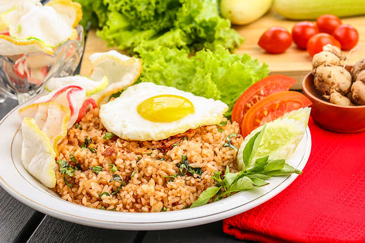

nasi-goreng-kencur-kemangi

hidangan khas Indonesia yang terbuat dari nasi putih matang (biasanya nasi sisa kemarin atau nasi dingin) yang ditumis kembali menggunakan minyak atau margarin, serta dibumbui dengan kecap manis, terasi, bawang merah, bawang putih, cabai, dan garam